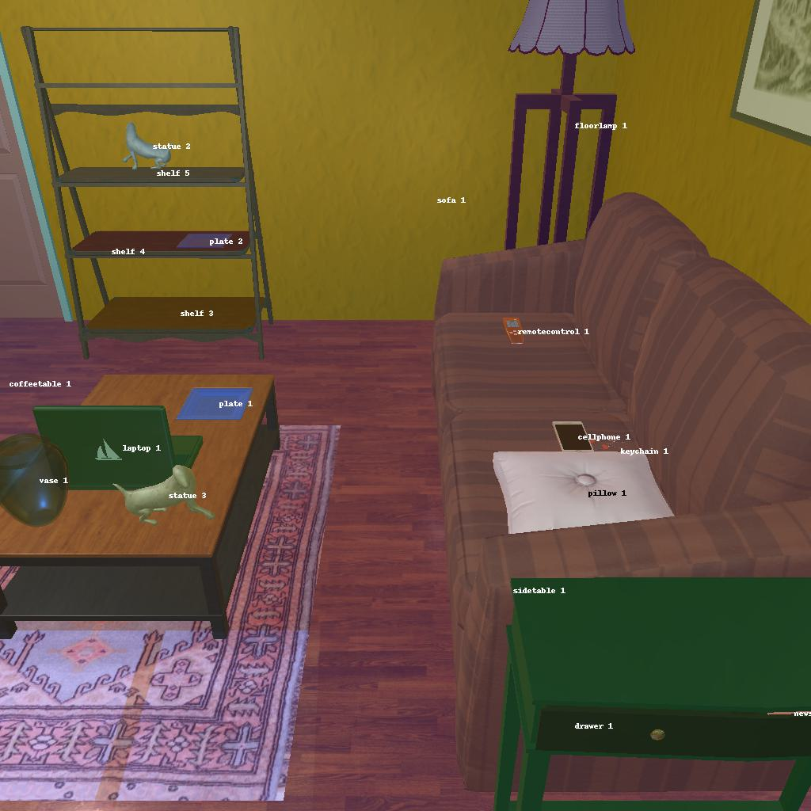

---------------------------------------------------------task: 3---------------------------------------------------------
--------------------------------------------------------------------------------------------------------------------------------------------------------------------
--------------------------------------------------------------------------------------------------------------------------------------------------------------------
Step:--------------------------------------------------------------------------5-------------------------------------------------------------------------------
----------------------------------------
VLM Prompt:
Image1:
Image2:
**Instruction**
1. Analyze the provided image to identify all visible household objects, focusing on those relevant to the task description "examine the plate with the floorlamp."
2. Use the analysis of the image and the task hint "The agent must find an object of the desired type, locate and turn on a light source with the desired object in-hand." to answer the question: what is the most reasonable action in the choices for the task description "examine the plate with the floorlamp"?
4. Decide and write the answer using the template: The answer is: (i): , where i is the real number. If there is no desired object in the image, search every place based on **Initial Observation** to find the object. And if no one is exactly correct, choose a similar answer.
**Initial Observation**
You are in the middle of a room. Looking quickly around you, you can see armchair (1), garbagecan (1), tvstand (1), shelf (1-5), sofa (1), coffeetable (1), sidetable (1-2), drawer (1)
**Answer Choices**
(1): go to armchair 1
(2): go to garbagecan 1
(3): go to tvstand 1
(4): go to shelf 1
(5): go to sofa 1
(6): go to coffeetable 1
(7): go to sidetable 1
(8): go to sidetable 2
(9): go to shelf 4
(10): go to shelf 5
(11): open drawer 1
(12): close drawer 1
(13): examine drawer 1
**Answer**
Let's think step by step by following the instructions.
----------------------------------------
----------------------------------------
Original Response:
Firstly, we need to identify all visible household objects relevant to the task description "examine the plate with the floorlamp." In Image1, we do not see any plates or floorlamps, so we move on to Image2. In Image2, we can see the floorlamp 1 next to the sofa 1, and on shelf 4, there is plate 2. There is also a plate 1 on the coffeetable 1.
With the task hint in mind, the agent must find a plate, which is the desired object, and then locate and turn on a light source, which in this case is the floorlamp, with the plate in hand.
Based on the Initial Observation and the visible objects in Image2, the most reasonable action would be to first go to the location where the plate is and then go to the floorlamp. Since plate 2 is closer to the floorlamp 1 compared to plate 1, it would be more logical to go to shelf 4 to grab plate 2.
Therefore, the answer is: (9): go to shelf 4.
----------------------------------------
----------------------------------------
>>> Refine Original VLM Response and Get Pure Action: No action
----------------------------------------
-----------------------------------------------------------------
Running time: 10.525582075119019 seconds
Total Money: 1.30344
-----------------------------------------------------------------
-----------------------------------------------------------------
Text Observation:Nothing happens.
-----------------------------------------------------------------
UNSUCCEED